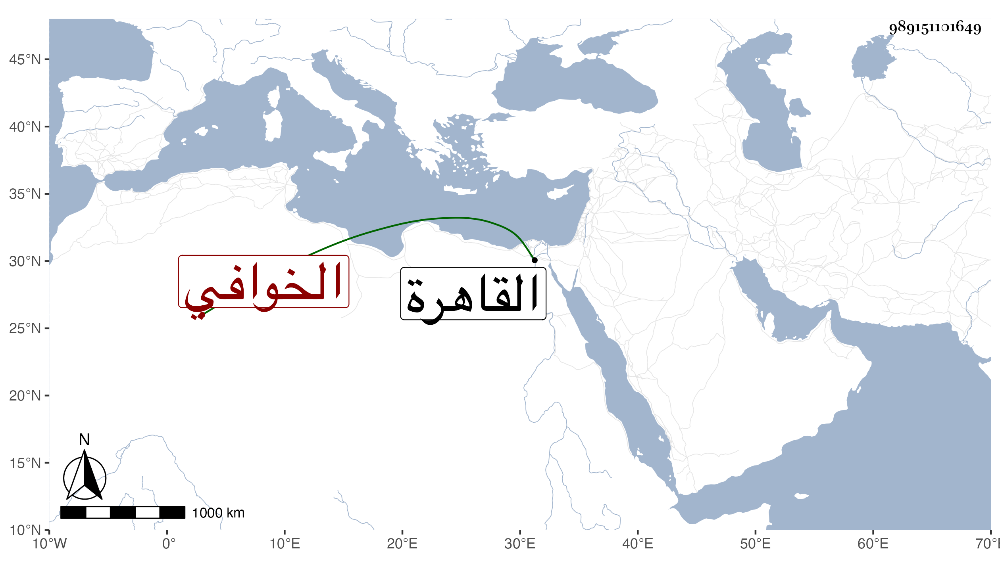

0902Sakhawi.DawLamic.ITO20230111-ara1.EIS1600.989151101649
Biography ID: 989151101649
إبراهيم بن أبي بكر المسمى محمد بن محمد بن محمد علي الخوافي الشهير والده كما سيأتي قدم معه إلى القاهرة في سنة أربع وعشرين فقال لشيخنا حين مدح والده بما سيأتي :
| شهاب المجد من شرف وقدر | علا مستغنيا عن الأتصاف |
| محيط العلم طود العلم حقا | له الفضل العظيم بلا خلاف |
وما علمت متى مات .
